토목산업기사 (2004-05-23 기출문제)
1과목: 응용역학
1. 그림과 같은 빗금 부분의 단면적 A인 단면에서 도심 y를 구한 값은?
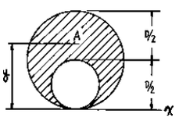
- 5D/12
- 6D/12
- 7D/12
- 8D/12
(정답률: 알수없음)

2. 그림과 같은 구조물에서 AC 강봉의 최소직경 D는? (단, 강봉의 허용응력은 σa=1,400kg/cm2으로 한다.)
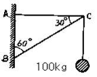
- 4mm
- 6mm
- 8mm
- 10mm
(정답률: 알수없음)
3. 길이가 6m인 단순보의 중앙에 3t의 집중하중이 연직으로 작용하고 있다. 이 때 단순보의 최대 처짐은 몇 cm 인가? (단, 보의 E=2000000kg/cm2, I=15000cm4이다.)
- 1.5
- 0.45
- 0.27
- 0.09
(정답률: 알수없음)
4. 그림과 같은 보의 고정단 A의 휨 모멘트는?
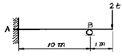
- 1 t· m
- 2 t· m
- 3 t· m
- 4 t· m
(정답률: 알수없음)
5. 지름이 D인 원형 단면의 기둥에서 핵(Core)의 직경은?
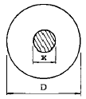
- D/2
- D/3
- D/4
- D/6
(정답률: 알수없음)
6. 다음 장주의 단면, 길이, 하중이 같을 때 가장 강한 기둥은?
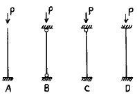
- A
- B
- C
- D
(정답률: 알수없음)
7. 그림과 같은 3힌지 라아멘에 등분포 하중이 작용할 경우 A점의 수평반력은?
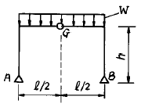
- 0
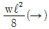
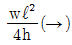
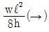
(정답률: 알수없음)
8. 그림과 같은 하우 트러스의 bc 부재의 부재력 S는?
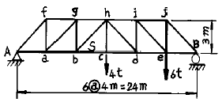
- 2t
- 4t
- 8t
- 12t
(정답률: 알수없음)
9. 그림과 같은 부정정보에서 지점 B의 휨모멘트 MB는?
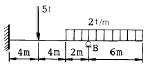
- -31.2 t·m
- -36 t·m
- -41 t·m
- -47 t·m
(정답률: 알수없음)
10. 직경 D인 원형 단면보에 휨모멘트 M이 작용할 때 최대 휨응력은?
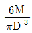
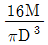
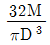
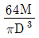
(정답률: 알수없음)
11. 다음 도형(빗금친 부분)의 X축에 대한 단면 1차 모멘트는?
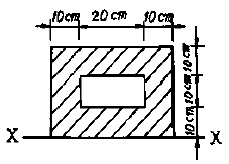
- 5,000cm3
- 10,000cm3
- 15,000cm3
- 20,000cm3
(정답률: 알수없음)
12. 다음 구조물에서 절점D는 이동하지 않으며 재단 A, B, C가 고정일 때 MCD는?
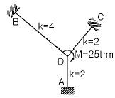
- 3.125t· m
- 4.667t· m
- 6.333t· m
- 6.250t· m
(정답률: 알수없음)
13. 탄성계수 E는 2,000,000kg/cm2이고 포아슨 비 ν=0.3일 때 전단탄성계수 G는 약 얼마인가?
- 770,000kg/cm2
- 750,000kg/cm2
- 730,000kg/cm2
- 710,000kg/cm2
(정답률: 알수없음)
14. 그림과 같은 캔틸레버보의 자유단에 단위처짐이 발생하도록 하는데 필요한 등분포하중 w의 크기는? (단, EI는 일정하다.)
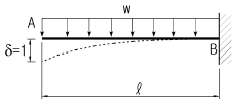
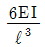
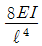
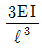
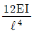
(정답률: 알수없음)
15. 리벳이 파괴될 때는 주로 어떤 응력이 발생하여 파괴되는가?
- 휨응력
- 인장응력
- 전단응력
- 압축응력
(정답률: 알수없음)
16. 다음과 같은 단면적이 A인 임의의 부재단면이 있다. 도심축으로부터 y1 떨어진 축을 기준으로한 단면2차모멘트의 크기가 Ix1일때, 도심축으로부터 3y1 떨어진 축을 기준으로한 단면2차모멘트의 크기는?
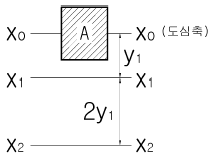
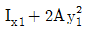
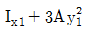
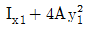
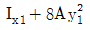
(정답률: 알수없음)
17. 길이가 1.0m이고 한 변의 길이가 10cm인 정사각형 단면의 부재가 양끝이 고정되어 있다. 온도가 10℃ 내려갔을 때 이로 인한 부재 단면에 발생하는 단면력은? (탄성계수 E=2.1×10６kg/cm2, 선팽창계수=10-5/℃)
- 210 kg
- 420 kg
- 21000 kg
- 42000 kg
(정답률: 알수없음)
18. 다음 그림에서 하중 P 에 의한 A 점의 휨모멘트는?
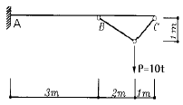
- 10 t· m
- 20 t· m
- 30 t· m
- 50 t· m
(정답률: 알수없음)
19. 다음 그림과 같이 연직의 분포하중 w = 2x2 이 작용한다. 지점 B 의 연직방향 반력의 크기는?
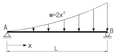
- L2/2
- 2L2/3
- L3/2
- 2L3/3
(정답률: 알수없음)
20. 탄성변형에너지는 외력을 받는 구조물에서 변형에 의해 구조물에 축적되는 에너지를 말한다. 탄성체이며 선형거동을 하는 길이가 L인 캔틸레버보에 집중하중 P가 작용할 때 굽힘모멘트에 의한 탄성변형에너지는? (단, EI는 일정)
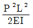
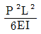
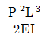
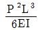
(정답률: 알수없음)
2과목: 측량학
21. A, B 두 점의 표고가 각각 102.3m, 504.7m 일 때 축척 1/25,000 지형도 상에 주곡선 간격으로 몇 개의 등고선을 삽입할 수 있는가?
- 8개
- 20개
- 40개
- 48개
(정답률: 알수없음)
22. 1/50,000 지형도 상에서 두점간의 거리가 62㎜이고 표고차가 500m일 때 이 사면의 경사도는 약 얼마인가?
- 1/4
- 1/6
- 1/8
- 1/10
(정답률: 알수없음)
23. 표와 같은 횡단수준측량에서 우측 12m 지점의 지반고는? (단, 측점 No. 10의 지반고는 100.00m 이다.)
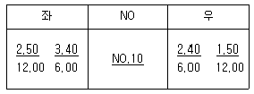
- 99.50m
- 99.60m
- 100.00m
- 101.50m
(정답률: 알수없음)
24. 노선측량에서 제1중앙종거(M)은 제3중앙종거(M2)의 약 몇 배인가?
- 2배
- 4배
- 8배
- 16배
(정답률: 알수없음)
25. 종중복도가 60%인 단 촬영경로로 촬영한 사진의 지상 유효면적은? (단, 촬영고도 3000m, 초점거리 150mm, 사진크기 210mm×210mm)
- 15.089km2
- 10.584km2
- 7.⑤6km2
- 5.889km2
(정답률: 알수없음)
26. 트래버스 측량에서 각 관측 결과가 허용오차 이내일 경우 오차처리 방법으로 옳지 않은 것은?
- 각 관측 정확도가 같을 때는 각의 크기에 관계없이 등배분한다.
- 각 관측 경중률이 다를 경우에는 경중률에 반비례하여 배분한다.
- 변 길이의 역수에 비례하여 배분한다.
- 각의 크기에 비례하여 배분한다.
(정답률: 알수없음)
27. 평판측량에서 전진법에 의하여 측점 16개의 폐합트래버스를 측정할 때 허용 폐합오차는?
- ± 1.2mm
- ± 1.5mm
- ± 1.8mm
- ± 2.1mm
(정답률: 알수없음)
28. 다음은 타원체에 관한 설명이다. 옳은 것은?
- 어느 지역의 측량좌표계의 기준이 되는 지구타원체를 준거타원체(또는 기준타원체)라 한다.
- 실제 지구와 가장 가까운 회전타원체를 지구타원체라하며, 실제 지구의 모양과 같이 굴곡이 있는 곡면이다.
- 타원의 주축을 중심으로 회전하여 생긴 지구물리학적형상을 회전타원체라 한다.
- 준거타원체는 지오이드와 일치한다.
(정답률: 알수없음)
29. 삼각점에서 행해지는 모든 각 관측에서 만족해야할 조건이 아닌 것은?
- 한 측점의 둘레에 있는 모든 각을 합한 것은 360° 가되어야 한다.
- 삼각망 중 어느 한변의 길이는 계산순서에 관계없이 동일해야 한다.
- 삼각형 내각의 합은 180° 가 되어야 한다.
- 각 관측 방법은 방사법을 사용하여 최대한 정확히 한다.
(정답률: 알수없음)
30. 캔트(cant)의 계산에 있어서 곡률반경을 2배로 하면 캔트는 몇 배가 되는가?
- 1/4배
- 1/2배
- 2배
- 4배
(정답률: 알수없음)
31. 교점(I.P.)는 기점에서 187.94m의 위치에 있고 곡선반경(R)은 250m, 교각(I) 43°57′20″, 현의 길이가 20m인 단곡선의 접선길이는?
- 87.046 m
- 100.894 m
- 288.834 m
- 50.447 m
(정답률: 알수없음)
32. 트래버스 측선의 방위가 S 75° W, 측선거리 60m 일 때 위거 및 경거는?
- 위거 : - 15.53m , 경거 : - 57.96m
- 위거 : + 57.96m , 경거 : + 15.53m
- 위거 : - 57.96m , 경거 : - 15.53m
- 위거 : + 15.53m , 경거 : + 57.96m
(정답률: 알수없음)
33. 축척 1:1000에서의 면적을 측정하였더니 도상면적이 3cm2이었다. 그런데 도면 전체가 1% 수축되었었다면 실제면적은?
- 30600m2
- 3060m2
- 306m2
- 30.6m2
(정답률: 알수없음)
34. 지오이드를 바르게 설명한 것은?
- 육지 및 해저의 凹凸을 평균값으로 정한 면이다.
- 평균해수면을 육지내부까지 연장했을 때의 가상적인 곡면이다.
- 육지와 해양의 지평면을 말한다.
- 회전타원체와 같은 것으로 지구형상이 되는 곡면이다
(정답률: 알수없음)
35. 삼각망 중 정확도가 가장 높은 삼각망은?
- 단열삼각망
- 단삼각망
- 유심삼각망
- 사변형삼각망
(정답률: 알수없음)
36. 유속 측량 장소의 선정 시 고려하여야할 사항으로 옳지 않은 것은?
- 직류부의 흐름이 일정하고 하상경사가 일정하여야 한다.
- 수위 변화에 횡단 형상이 급변하지 않아야 한다.
- 가급적 지형지물이 없는 곳을 택한다.
- 관측장소의 상,하류의 유로가 일정한 단면을 갖고 있으며 관측이 편리하여야 한다.
(정답률: 알수없음)
37. 노선측량에서 노선선정을 할 때 가장 중요한 것은?
- 곡선의 대소(大小)
- 공사기일
- 곡선설치의 난이도
- 수송량 및 경제성
(정답률: 알수없음)
38. 지상고도 3,000m의 비행기 위에서 초점거리 150.0mm인 사진기로 촬영한 항공사진에서 길이가 30m인 교량의 사진에서의 길이는?
- 1.3mm
- 2.3mm
- 1.5mm
- 2.5mm
(정답률: 알수없음)
39. 100m2의 정사각형 토지면적을 0.1m2까지 정확하게 구하기 위하여 필요하고도 충분한 한 변의 측정거리는 다음 중 몇 ㎜까지 측정하여야 하겠는가?
- 3㎜
- 4㎜
- 5㎜
- 6㎜
(정답률: 알수없음)
40. 장애물로 인하여 PQ측정이 불가능하여 간접측량한 결과 AB = 225.85m가 측정되었다. 이 때 PQ의 거리는? (단, ∠PAB = 79° 36′ ∠QAB = 35° 31′ ∠PBA = 34° 17′ ∠QBA = 82° ⑤′ )
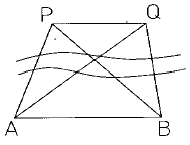
- 179.46m
- 177.98m
- 178.65m
- 180.75m
(정답률: 알수없음)
3과목: 수리학
41. 다음과 같은 작은 오리피스에서 유속을 구한 값은? (단, 유속계수 Cv는 0.9이다)
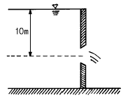
- 8.9m/sec
- 9.9m/sec
- 12.6m/sec
- 14.0m/sec
(정답률: 알수없음)
42. 관수로에서 마찰손실계수(f)와 가장 관계가 깊은 것은?
- 한계수심
- 후르드(Froude)수
- 레이놀즈(Renolds)수
- 관의 길이
(정답률: 알수없음)
43. 다음 설명 중 옳은 것은?
- 수문학에서 강수란 구름이 응축되어 지상으로 떨어지는 모든 형태의 수분 중 비(Rain)만을 의미한다.
- 우량(雨量)의 크기는 일정한 면적에 내린 총우량에 그 면적을 곱하여 체적으로 표시한다.
- 증발현상이란 물분자들이 눈 혹은 어름과 같은 고체상태로부터 액체상태를 거치지 않고 바로 기화하는 것을 말한다.
- 지상에 내린 물이 토양면을 통해 스며들어 중력의 영향으로 계속 지하로 이동하여 지하수면에 도달하는 현상을 침누(percolation)라 한다.
(정답률: 알수없음)
44. 기온 15℃에서의 포화증기압이 17.38mb이고 상대습도가 30%이면 실제 증기압은?
- 5.21mb
- 38.25mb
- 172.61mb
- 57.93mb
(정답률: 알수없음)
45. 비에너지와 수심과의 관계 그래프에서 한계수심보다 수심이 작은 흐름은?
- 사류
- 상류
- 한계류
- 난류
(정답률: 알수없음)
46. 단면이 일정한 긴 관에서 마찰손실만 일어나는 경우 에너지선과 동수경사선은?
- 서로 나란하다.
- 서로 겹친다.
- 일정하지 않다.
- 압력수두 만큼 차이가 난다.
(정답률: 알수없음)
47. 수면 차가 항상 20m인 수조를 지름 30cm, 길이 500m인 관으로 연결되었다면 관속의 유속은? (단, 관의 마찰손실계수 f=0.03, 입구손실계수 fi=0.5, 출구손실계수 fo=1.0이다.)
- 2.76m/sec
- 4.72m/sec
- 5.76m/sec
- 6.72m/sec
(정답률: 알수없음)
48. 다음과 같이 수로폭이 3m 인 판으로 물의 흐름을 가로막았을 때 상류수심은 6m, 하류수심은 3m 이였다. 이 때 전수압의 작용점 위치(y)는?
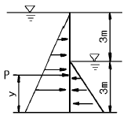
- y = 1.50m
- y = 2.33m
- y = 3.66m
- y = 4.56m
(정답률: 알수없음)
49. 어느 지역의 증발접시에 의한 연증발량이 98.2mm이고 증발접시 계수가 0.7일 때 저수지의 연증발량은?
- 29.49mm
- 68.74mm
- 98.24mm
- 140.29mm
(정답률: 알수없음)
50. 위어(weir)의 보편적인 사용 목적이 아닌 것은?
- 유량측정
- 취수를 위한 수위증가
- 분수(分水)
- 수질 오염방지
(정답률: 알수없음)
51. 관정의 펌프용 전동기 동력이 100kW, 펌프의 효율이 93%, 양정고 150m, 손실수두 10m일 때 펌프에 의한 양수량은?
- 0.02m3/sec
- 0.06m3/sec
- 0.12m3/sec
- 0.15m3/sec
(정답률: 알수없음)
52. 레이놀즈수가 갖는 물리적인 의미는?
- 점성력에 대한 중력의 비(중력/점성력)
- 관성력에 대한 중력의 비(중력/관성력)
- 점성력에 대한 관성력의 비(관성력/점성력)
- 관성력에 대한 점성력의 비(점성력/관성력)
(정답률: 알수없음)
53. 개수로의 수심을 h, 평균유속을 V, 에너지 보정계수를 α라 할 때 비에너지(He)를 옳게 표시한 식은?
- He = h+αV
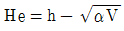
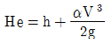
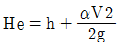
(정답률: 알수없음)
54. 어떤 유역에 20분간 지속된 강우강도가 20㎜/hr이었다면 강우량은?
- 1.00㎜
- 6.67㎜
- 10.33㎜
- 20.00㎜
(정답률: 알수없음)
55. 어떤 지역에 내린 강우의 시간적 분포는 다음 우량주상도와 같다. 총강우량이 75mm를 기록하였을 때 이 유역의 출구에서 측정한 지표유출량이 33mm였다면 ø-index는?
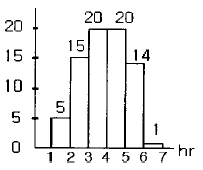
- 6mm/hr
- 7mm/hr
- 8mm/hr
- 9mm/hr
(정답률: 알수없음)
56. 지하수에 대한 설명 중 옳지 않은 것은?
- 불투수층 위의 대수층 내에 자유 지하수면을 가지는 자유 지하수를 양수하는 우물 중 우물바닥이 불투수층까지 도달한 것을 심정이라 한다.
- 불수수층 사이에 낀 투수층 내에 포함되어 있는 지하수를 피압면 지하수라 하며 이를 양수하는 우물을 굴착정이라 한다.
- 점토층과 같이 불투수층이 낀 투수층 내의 압력을 받고 있는 지하수를 자유면 지하수라 하고 이를 양수하는 우물 중 우물바닥이 불투수층까지 도달하지 않은 것을 천정이라 한다.
- 다르시(Darcy)의 법칙에서 지하수 유속은 동수경사에 비례하며 투수계수 ｋ는 토사의 간극률과 입경 등에 따라 다르다.
(정답률: 알수없음)
57. 1기압을 서로 다른 단위로 표시한 것으로 옳지 않은 것은?
- 1기압 = 760mmHg
- 1기압 = 1013mb
- 1기압 = 1.033kg/cm2
- 1기압 = 1.013 × 104dyne/cm2
(정답률: 알수없음)
58. 물이 들어 있고 뚜껑이 없는 수조가 9.8m/sec2으로 수직 상향 가속되고 있을 때 깊이 2m에서의 압력은?
- 8t/m2
- 4t/m2
- 2t/m2
- 0t/m2
(정답률: 알수없음)
59. 다음의 모세관 현상에 대한 설명 중 옳지 않은 것은?
- 모세관의 상승높이는 모세관의 지름 d에 반비례한다.
- 모세관의 상승높이는 액체의 단위중량에 비례한다.
- 모세관의 상승여부는 액체의 응집력과 액체와 관벽의 부착력에 의해 좌우된다.
- 액체의 응집력이 관벽과의 부착력보다 크면 관내 액체의 높이는 관 밖보다 낮아진다.
(정답률: 알수없음)
60. 단면 30㎝× 30㎝, 길이 4m, 단위중량 600㎏/m3의 물체를 물속에 완전히 가라 앉히려 할 때 가해야 할 적당한 힘은?
- 144㎏ 이상
- 108㎏ 이상
- 94㎏ 이상
- 58㎏ 이상
(정답률: 알수없음)
4과목: 철근콘크리트 및 강구조
61. fck = 21MPa, fy = 300MPa일 때 강도설계법으로 인장을 받는 이형철근(D32:db = 31.8mm, Ab = 794.2mm2)의 기본정착길이 ℓdb를 구한 값은? (단, 1MPa=10kgf/cm2)
- 1249mm
- 574mm
- 762mm
- 1000mm
(정답률: 알수없음)
62. 철근콘크리트의 균열에 대한 설명으로 틀린 것은?
- 이형 철근을 사용하면 균열폭을 최소화 할 수 있다.
- 동일 철근량에 대해 가능한 지름이 가는 철근을 많이 사용하면 균열을 줄일 수 있다.
- 가능한 범위내에서 배근간격이 작을수록 균열폭은 증가한다.
- 균열폭은 철근의 응력에 비례한다.
(정답률: 알수없음)
63. 다음 중 사인장 균열을 규제하기 위해 배치하는 전단 보강 철근은?
- 주철근
- 조립철근
- 배력철근
- 스터럽
(정답률: 알수없음)
64. 강도해석에서 fck=30MPa일 때 응력도의 높이 비 β1은 얼마인가? (단, 1MPa=10kgf/cm2)
- β1=0.85
- β=0.843
- β=0.836
- β=0.829
(정답률: 알수없음)
65. 길이가 10m인 PC보에서 포스트텐션 공법으로 설계할 때 강선에 1000MPa의 인장력을 가했더니 강선이 2.0mm 풀렸다. 이 때 프리스트레스의 감소량은? (단, Ep = 2.0×105MPa이고 일단정착이며, 1MPa=10kgf/cm2)
- 20MPa
- 30MPa
- 40MPa
- 50MPa
(정답률: 알수없음)
66. 단철근 직사각형 단면 보의 최대 철근비에 대한 설명 중 틀린 것은?
- 균형 철근비의 0.75배로 규정하고 있다.
- 최대 철근비로 배근된 단면의 보는 파괴시 철근의 항복으로 인한 연성파괴가 일어난다.
- 최대 철근비로 배근된 단면의 압축연단에서 중립축까지의 거리는 균형단면에 비해 짧다.
- 최대 철근비로 배근된 단면의 공칭설계 모멘트는 균형철근비로 배근된 단면에 비해 크다.
(정답률: 알수없음)
67. 강도설계법에 의해서 전단철근을 사용하지 않고 계수하중에 의한 전단력 40kN을 지지할 수 있는 직사각형보의 최소 단면적은 얼마인가? (단, fck = 21MPa이며, 1MPa=10kgf/cm2, 1N=0.1kgf)
- 114452mm2
- 130931mm2
- 186264mm2
- 198407mm2
(정답률: 알수없음)
68. 그림과 같이 지간 중앙점에서 강선을 꺾었을 때 이 중앙점에서 상향력 U의 값은?
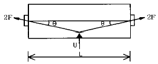
- 2Fsinθ
- 4Fsinθ
- 2Ftanθ
- 4Ftanθ
(정답률: 알수없음)
69. 강도설계법에 의해 전단부재를 설계할 때 보의 폭이 300mm 이고, 유효깊이가 500mm 이라면 이 때 수직스터럽의 최대 간격은 얼마인가?
- 250mm
- 300mm
- 400mm
- 600mm
(정답률: 알수없음)
70. 현행 콘크리트구조설계기준에 따른 옹벽의 구조해석에 대한 내용으로 틀린 것은?
- 캔틸레버식 옹벽의 저판은 전면벽과의 접합부를 고정단으로 간주한 캔틸레버로 가정하여 단면을 설계할 수 있다.
- 부벽식 옹벽의 저판은 부벽 간의 거리를 경간으로 가정하여 2방향 슬래브로 설계할 수 있다.
- 앞부벽은 직사각형보로 설계하여야 한다.
- 뒷부벽은 T형보로 설계하여야 한다.
(정답률: 알수없음)
71. 포스트텐션공법에서 그라우트(grout)를 행하는 가장 중요한 이유는?
- 강재의 부식 방지
- 강재의 정착과 부착
- 긴장력의 증진
- 부착력의 확보
(정답률: 알수없음)
72. 대칭 T형 콘크리트 단면에서 유효폭 산정시 고려해야 할 사항으로 틀린 것은? (단, tf=플랜지의 두께, bw=플랜지가 있는 부재에서의 복부폭을 의미한다.)
- 16tf+bw
- 양쪽 슬래브의 중심간 거리
- 보의 경간의 1/4
- (인접 보와의 내측 거리의1/2) + bw
(정답률: 알수없음)
73. 강도설계법에서 강도감소계수에 관한 규정 중 틀린 것은?
- 휨모멘트 - 0.85
- 축압축력(나선철근으로 보강된 철근콘크리트 부재)- 0.70
- 전단력 - 0.80
- 콘크리트의 지압력 - 0.70
(정답률: 알수없음)
74. 그림과 같은 확대기초에서 위험단면에 대한 휨모멘트는?
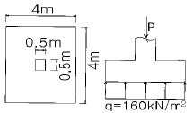
- 980 kN· m
- 720 kNㆍm
- 700 kNㆍm
- 630 kNㆍm
(정답률: 알수없음)
75. 다음 그림은 필렛(Fillet) 용접한 것이다. 목두께 a를 표시한 것중 옳은 것은?
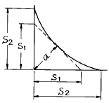
- a = S2 × 0.707
- a = S1 × 0.707
- a = S2 × 0.606
- a = S1 × 0.606
(정답률: 알수없음)
76. 콘크리트에 프리스트레스를 도입하면 콘크리트가 탄성재료로 전환된다는 생각은 다음 중 어느 개념인가?
- 강도개념(strength concept)
- 등가하중(equivalent transverse loading)의 개념
- 내력개념(internal force concept)
- 응력 개념(stress concept)
(정답률: 알수없음)
77. 프리스트레스의 감소원인 중 포스트텐션공법에만 해당되는 것은 어느 것인가?
- 탄성변형에 의한 손실
- 마찰에 의한 손실
- 콘크리트의 크리프와 건조수축에 의한 손실
- PS강재의 릴랙세이션(relaxation)에 의한 손실
(정답률: 알수없음)
78. 아래 그림에서 강판의 순폭은? (단, 볼트이음으로 볼트 구멍의 지름 25mm, 총폭 bg = 25cm)
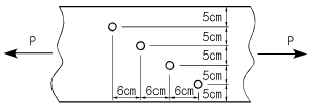
- 15 cm
- 20.4 cm
- 17.5 cm
- 22.5 cm
(정답률: 알수없음)
79. 단철근 직사각형 보에서 fck = 21MPa, fy = 400MPa일 때 균형철근비 ρb의 값은? (단, Es = 200000MPa이며, 1MPa=10kgf/cm2)
- 0.019
- 0.023
- 0.027
- 0.033
(정답률: 알수없음)
80. 고정하중(D)과 활하중(L)이 작용하는 우리나라의 콘크리트 구조물 설계에 사용하는 하중계수와 하중조합으로 알맞는 것은 다음 어느 것인가?
- 1.4D + 1.7L
- 1.5D + 1.8L
- 1.3D + 1.7L
- 1.6D + 1.8L
(정답률: 알수없음)
5과목: 토질 및 기초
81. 다음 그림과 같이 필터를 설치하여 만든 제방 100m길이당 침투 수량을 구하면? (단,흙 댐의 투수계수는 0.085㎝/sec이다.)
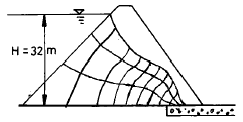
- 783.36m3/day
- 78336m3/day
- 940.03m3/day
- 94003m3/day
(정답률: 알수없음)
82. 연약지반 개량공법으로 압밀의 원리를 이용한 공법이 아닌 것은?
- 프리로딩 공법
- 바이브로 플로테이션 공법
- 대기압 공법
- 페이퍼 드레인 공법
(정답률: 알수없음)
83. 여러종류의 흙을 같은 조건으로 다짐시험을 하였다. 일반적으로 최적 함수비가 가장 작은 흙은?
- GW
- ML
- SW
- CH
(정답률: 알수없음)
84. 일반적인 기초의 필요조건으로 거리가 먼 것은?
- 동해를 받지 않는 최소한의 근입깊이를 가질 것
- 지지력에 대해 안정할 것
- 침하가 전혀 발생하지 않을 것
- 사용성, 경제성이 좋을 것
(정답률: 알수없음)
85. 그림에서 수두차 h를 최소 얼마 이상으로 하면 모래시료에 분사현상이 발생하겠는가?
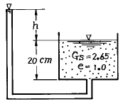
- 16.5cm
- 17.0㎝
- 17.4㎝
- 18.0㎝
(정답률: 알수없음)
86. 어떤 흙의 간극비(e)가 0.52 이고, 흙속에 흐르는 물의 이론 침투속도(v)가 0.214 cm/sec 일 때 실제의 침투유속(Vs)은?
- 0.424 cm/sec
- 0.525 cm/sec
- 0.626 cm/sec
- 0.727 cm/sec
(정답률: 알수없음)
87. 50t의 집중하중이 지표면에 작용할때 3m 떨어진 점의 지하 5m 위치에서의 연직응력은 얼마인가? (단, 영향계수는 0.2214라고 한다.)
- 0.392t/m2
- 0.443t/m2
- 0.526t/m2
- 0.610t/m2
(정답률: 알수없음)
88. 어떤 흙의 전단실험결과 C=1.8kg/cm2, ø=35°, 토립자에 작용하는 수직응력 σ =3.6kg/cm2 일 때 전단강도는?
- 4.89kg/cm2
- 4.32kg/cm2
- 6.33kg/cm2
- 3.86kg/cm2
(정답률: 알수없음)
89. 모래의 내부마찰각 ø와 N치와의 관계를 나타낸 Dunham의 식 ø= 12N +C에서 상수C의 값이 제일 큰 경우는?
- 토립자가 모나고 입도분포가 좋을 때
- 토립자가 모나고 균일한 입경일 때
- 토립자가 둥글고 입도분포가 좋을 때
- 토립자가 둥글고 균일한 입경일 때
(정답률: 알수없음)
90. 말뚝의 지지력을 결정하기 위해 엔지니어링 뉴스 공식을 사용할 때 안전율은?
- 1
- 2
- 3
- 6
(정답률: 알수없음)
91. 양면배수 조건으로 압밀도 100%에 도달하는데 1년이 걸렸다. 일면배수일 경우 몇 년 걸리겠는가?
- 0.25년
- 1년
- 2년
- 4년
(정답률: 알수없음)
92. 다음 전단 시험법 가운데 간극수압을 측정하여 유효 응력으로 정리하면 압밀배수 시험(CD-test)과 거의 같은 전단상수를 얻을 수 있는 시험법은?
- 비압밀 비배수시험(UU-test)
- 직접전단시험
- 압밀 비배수시험(CU-test)
- 일축압축시험(qu-test)
(정답률: 알수없음)
93. 어떤 점토시료를 일축압축 시험한 결과 수평면과 파괴면이 이루는 각이 48°였다. 점토시료의 내부마찰각은?
- 3°
- 18°
- 30°
- 6°
(정답률: 알수없음)
94. 다음중 직접 기초라고 할수없는 기초는?
- 독립기초
- 복합기초
- 전면기초
- 말뚝기초
(정답률: 알수없음)
95. 지표가 수평인 곳에 높이 5m의 연직옹벽이 있다. 흙의 단위중량이 1.7t/m3, 내부마찰각 30° 이고 점착력이 없을 때 옹벽에 작용하는 주동토압은 얼마인가?
- 4.25 t/m
- 5.64 t/m
- 6.75 t/m
- 7.08 t/m
(정답률: 알수없음)
96. 지름 30cm인 재하판으로 측정한 지지력계수 K30=6.6kg/cm3일 때 지름 75cm인 재하판의 지지력계수 K75은?
- 3.0kg/cm3
- 3.5kg/cm3
- 4.0kg/cm3
- 4.5kg/cm3
(정답률: 알수없음)
97. 다음 중 동상(凍上)이 일어나기 쉬운 지반 조건인 것은?
- 지하수위 바로위에 불투수성 점성토지반이 존재한다.
- 모래질 지반으로 지하수위가 지표면에서 10m이상 멀다.
- 실트질 지반으로 지하수위가 지표면과 가깝다.
- 실트질 모래지반으로 지반의 지지력이 상당히 높다.
(정답률: 알수없음)
98. 어떤 시료가 조밀한 상태에 있는가, 느슨한 상태에 있는 가를 나타내는데 쓰이며, 주로 모래와 같은 조립토에서 사용되는 것은?
- 상대밀도
- 건조밀도
- 포화밀도
- 수중밀도
(정답률: 알수없음)
99. 흙의 다짐에서 다짐 에너지를 증가시키면 어떤 변화가 생기는가?
- 최적 함수비는 증가하고,최대 건조밀도는 감소한다.
- 최적 함수비와 최대 건조밀도는 증가한다.
- 최적 함수비는 감소하고,최대 건조밀도는 증가한다.
- 최적 함수비와 최대 건조밀도는 감소한다.
(정답률: 알수없음)
100. 흙의 연경도(consistency)에 관한 다음 설명 중 옳지 않은 것은?
- 소성지수는 액성한계와 소성한계의 차로서 표시된다
- 유동지수는 유동곡선의 기울기이다
- 수축한계를 지나서도 수축이 계속되는 것이 보통이다
- 어떤 흙의 함수비가 소성한계보다 높으면 그 흙은 소성상태 또는 액성상태에 있다고 할 수 있다
(정답률: 알수없음)
6과목: 상하수도공학
101. 수격현상의 발생을 경감 시킬 수 있는 방안이 아닌 것은?
- 펌프의 속도가 급격히 변화하는 것을 방지한다.
- 관내의 유속을 크게 한다.
- 밸브를 펌프 송출구 가까이 설치한다.
- 압력조정 수조를 설치한다.
(정답률: 알수없음)
102. 지하수의 경제 양수량은 양수시험으로부터 구한 최대양수량의 몇 % 이하로 하는 것이 바람직한가?
- 60
- 70
- 80
- 90
(정답률: 알수없음)
103. 다음의 소독방법 중 발암물질인 THM 발생 가능성이 가장 높은 것은?
- 염소소독
- 오존소독
- 이산화염소소독
- 자외선소독
(정답률: 알수없음)
104. 다음의 활성슬러지 공법중에서 슬러지 발생량이 가장 적은 방식은?
- 계단식 폭기법
- 표준 폭기법
- 접촉 안정법
- 장기 폭기법
(정답률: 알수없음)
1⑤. 5%의 고형물을 함유하는 3,200ℓ 의 일차슬러지를 고형물의 농도가 8%되게 농축시키면 농축된 슬러지의 부피는? (단, 슬러지의 비중은 1.0으로 가정)
- 1,500ℓ
- 2,000ℓ
- 2,500ℓ
- 2,800ℓ
(정답률: 알수없음)
106. 하수종말처리장 유입수의 평균 BOD=1,800㎎/ℓ , 평균유량=2,000m3/day, 폭기조 MLVSS =2,500㎎/ℓ ,폭기조의 부피=14,000m3 일 때 F/M비는?
- 0.08 ㎏-BOD/㎏-MLVSS.day
- 0.10 ㎏-BOD/㎏-MLVSS.day
- 0.18 ㎏-BOD/㎏-MLVSS.day
- 0.21 ㎏-BOD/㎏-MLVSS.day
(정답률: 알수없음)
107. 급수인구 추정법에서 등비급수법에 해당되는 식은? (단, Pn=n년 후 추정 인구, Po=현재 인구, n=경과 년 수, a, b=상수, k=포화인구, r=년 평균증가율)
- Pn=Po+rna
- Pn=Po(1+r)n
- Pn=Po+nr
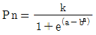
(정답률: 80%)
108. 배수관망의 설계에 있어서 최대 동수압은 가능한 한 얼마이내로 하는 것이 타당한가?
- 4.0kg/cm2
- 5.0kg/cm2
- 6.0kg/cm2
- 7.0kg/cm2
(정답률: 알수없음)
109. 수질검사에서 대장균을 검사하는 이유는?
- 대장균이 병원체이므로
- 대장균을 이용하여 병원체의 존재를 추정하기 위하여
- 수질오염을 가져오는 대표적인 세균이므로
- 물을 부패시키는 세균이므로
(정답률: 알수없음)
110. 우수조정지를 설치하여야 하는 곳과 가장 거리가 먼 것은?
- 하류관거의 유하능력이 부족한 곳에 설치한다.
- 하수처리장이 설치되지 않은 곳에 설치한다.
- 하류지역의 펌프장 능력이 부족한 곳에 설치한다.
- 방류수로의 유하능력이 부족한 곳에 설치한다.
(정답률: 알수없음)
111. 유달시간을 바르게 표현한 것은? (단, t1: 유입시간, L:하수관거의 길이, V:관내유속)
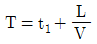
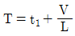
(정답률: 알수없음)
112. 우수량을 산정하는 합리식의 공식이 다음과 같을 때 각 각의 단위로 틀린 것은?
- Q : [m3/sec]
- C : [단위없음]
- I : [㎜/hr]
- A : [km2]
(정답률: 알수없음)
113. 직경 300mm, 길이 100m인 주철관을 사용하여 0.15m3/sec의 물을 20m 높이에 양수하기 위한 펌프의 소요동력은? (단,마찰손실계수 f=0.0268, 펌프의 효율은 70% 이고, 마찰손실 고려)
- 약 57HP(마력)
- 약 62HP(마력)
- 약 72HP(마력)
- 약 81HP(마력)
(정답률: 알수없음)
114. 인구 1인당 생활오수의 BOD오염부하 원단위를 50g/인· 일이라 할 때 인구 10만 도시의 하수처리장에 유입되는 BOD 부하는?
- 5,000㎏/일
- 500㎏/일
- 50㎏/일
- 50ton/일
(정답률: 알수없음)
115. 상수도시설의 계획년도에 있어서 큰댐 및 대구경관로의 경우, 계획설계기간의 범위로 가장 알맞는 것은?
- 25∼50년
- 20∼25년
- 10∼15년
- 5∼10년
(정답률: 알수없음)
116. pH 및 수온이 어떠할 때 염소살균 효과가 높아지는가?
- pH가 낮고 수온이 높을 때
- pH가 낮고 수온이 낮을 때
- pH가 높고 수온이 낮을 때
- pH가 높고 수온이 높을 때
(정답률: 알수없음)
117. 지역내 강우량과 실제 우수유출량과의 비율을 나타낸 것은?
- 확률강우
- 재현시간
- 강우강도
- 유출계수
(정답률: 알수없음)
118. 폭 2m인 직사각형 개수로에 수심 1m 물이 흐르고 있다. Manning의 조도계수는 0.015이고 관로의 경사가 1/1000일 때 도수로에 흐르는 유량은?
- 1.33m3/sec
- 2.66m3/sec
- 5.32m3/sec
- 6.22m3/sec
(정답률: 알수없음)
119. 펌프의 유입구 유량이 0.2m3/sec이고, 유속이 3m/sec인 경우 흡입구경은?
- 150mm
- 228mm
- 292mm
- 367mm
(정답률: 알수없음)
120. 하수관거가 관정부식(crown corrosion)이 되는 주요 원인 물질은?
- 황화합물
- 질소화합물
- 칼슘화합물
- 염소화합물
(정답률: 알수없음)
도심 y는 단면의 모든 면적의 중심선상에 위치한 점으로, 삼각형의 중심선상과 사각형의 중심선상의 위치를 고려하여 계산할 수 있다. 삼각형의 중심선상은 높이의 2/3 지점이므로 y1 = (2/3) × (5D/2) = 5D/3 이고, 사각형의 중심선상은 높이의 1/2 지점이므로 y2 = (1/2) × (5D) = 5D/2 이다.
따라서 전체 면적의 중심선상인 도심 y는 (5D^2/6 × 5D/3 + 5D^2/3 × 5D/2) / (5D^2/6 + 5D^2/3) = 7D/12 이다. 따라서 정답은 "7D/12"이다.